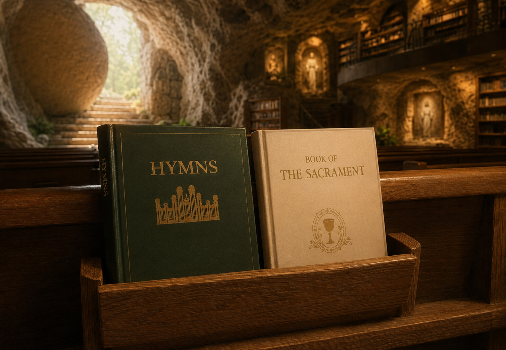

JESUS IS REMODELING OUR CHURCH CHAPELS
```(for me)
Actually, He is placing hidden treasures at church for those who have eyes to see Jesus TV.
Easter eggs.
I found one today.
He has given me new eyes....
Sunday, at church, within My Jesus-Greg WORLD in the JesusVerse, when I stretch and use “The Force”—that is, use MY GIFT OF GOD called my “sacred imagination”—this is what I see in my mind’s eye:
A white book.
Placed by Jesus right in front of me, beside the hymnal.
I can grab it while I am sitting in the pew.
I can reach out and read chapters—like the one you are about to read (but only if Jesus tells you to!)—that Jesus has placed in Book of the Sacrament.
Which, BTW, is a brand-new book Jesus inserted into our open-canon Bible, JGV.
Jesus is placing chapters in that book to explain to me things about the relationship between Spirit Possession (Alma 34:34) and the Holy Sacrament.
(((Yeah. I’m a normal LDS. A normal, on-fire, born-again Saint, who loves diving into the deep end with Jesus.
Far from the shallows now.
)))
(In Spring City, in the “Womb/Tomb” cave, Jesus and I just added a new writing to The Sacrament Book.)
TODAY, WITH JESUS AND ANGELS (I IMAGINE), I PARTICIPATED IN AN ANCIENT BREAD-AND-WATER POSSESSION RITUAL (ALMA 34:34), TARGETING MY SOUL FOR SPIRITUAL NOURISHMENT.
Did/Does/Will it make a difference?
Yes, I think so. I guess so. I imagine so. I believe so.
We’ll see.
Anyway, during the meeting (yes, He is chatty—#HearHim), Jesus whispered something like this to me:
“Greg, in the sacrament prayer, this phrase can be parsed like this:
‘to bless and sanctify this bread to the souls of all those who partake of it’
Bless = to invoke God’s blessing upon the bread; to set it apart for a sacred purpose.
Sanctify = to make holy, consecrate, or dedicate to God.
This bread = the physical bread, which is about to function sacramentally as a symbol of Christ’s body.
“to the souls” is especially interesting. It does not simply say “sanctify this bread.” It says:
sanctify this bread → to the souls → of those who partake
So “to” can be heard as carrying something like the sense of “for the spiritual benefit of” the people receiving it.
“All those who partake of it” = everyone who actually receives/eats the bread.
Put into more contemporary English:
“Please bless and consecrate this bread so that it may be holy and spiritually beneficial to every person who receives it.”
Or, more literally:
“Bless this bread and set it apart as sacred for the souls of everyone who eats it.”
And there is a potentially important distinction here: the prayer isn't merely asking God to make the bread holy as an object.
The sanctification has a destination: the human soul.
The bread is blessed and sanctified to them—toward what God intends to accomplish in the souls of those who partake.”
Jesus then widened the lens.
“Greg, think about the act itself. You aren't merely eating bread. You are breaking bread—an ancient human action loaded with meanings of life, dependence, hospitality, covenant, fellowship and communion.”
Jesus added, “Greg, before it became a common idiom for sharing a meal, breaking bread was a sacred, literal ritual rooted in survival, trust, and spiritual devotion.
For thousands of years, people have torn, divided, shared and eaten bread together. Because bread was a basic food of life, sharing it naturally accumulated meanings of hospitality, fellowship, dependence and sacred communion.
Across history and geography, this simple gesture evolved into several distinct ritualistic forms.
Sacred Hospitality and Alliances
In the ancient Near East and Mediterranean, bread was the ultimate symbol of life. Offering bread to a traveler wasn't just polite; it was a sacred duty.
- The Law of Hospitality: Once a guest broke bread at a host's table, an unspoken, inviolable pact of mutual protection was formed.
- Covenant Sealing: Shared meals—including bread—could accompany covenants, alliances, agreements and acts of reconciliation. Eating together could signify that former strangers or adversaries had entered a new relationship.
Religious and Spiritual Communions
The physical act of tearing bread holds foundational importance in major world religions:
- The Jewish Sabbath and Havdalah: The weekly Sabbath meal traditionally begins with a blessing and the breaking of Challah—a braided loaf symbolizing the manna that sustained ancient Israelites in the desert. Historically, breaking bread by hand was also a practical necessity.
- The Christian Eucharist: Drawing from the Passover tradition, Christian scripture details Jesus breaking bread during the Last Supper to symbolize his body and the unity of his followers. For the early Christian church, meeting in homes to “break bread” served as both a communal meal and a core act of worship.
Folk Magic and Milestones
Beyond formal religion, bread-breaking heavily influenced folklore and major life transitions:
- Ancient Roman and Slavic Weddings: In ancient Rome, bread was broken or crumbled over the bride's head to guarantee fertility and abundance. Similarly, Slavic cultures still practice a “bread and salt” welcoming ritual where newlyweds break a ceremonial loaf to ensure prosperity.
Did/Does/Will it make a difference?
We’ll see.
But making a difference in the soul is precisely what the ritual is asking for.